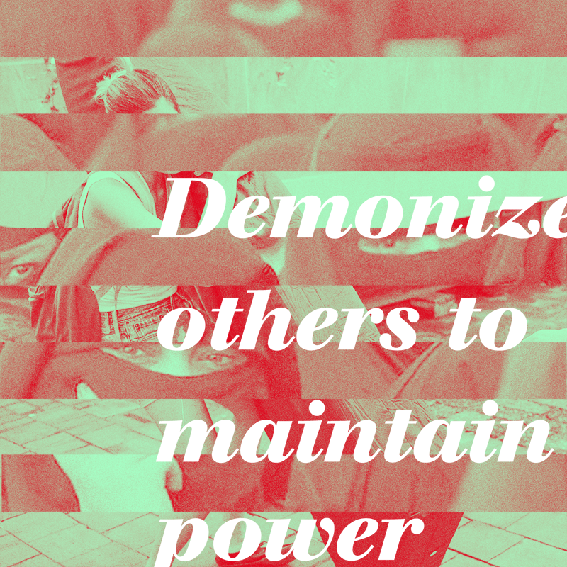
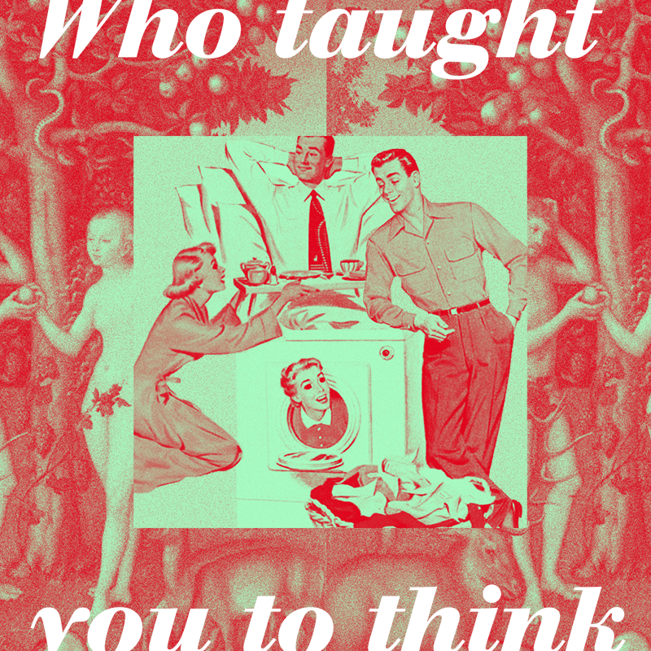
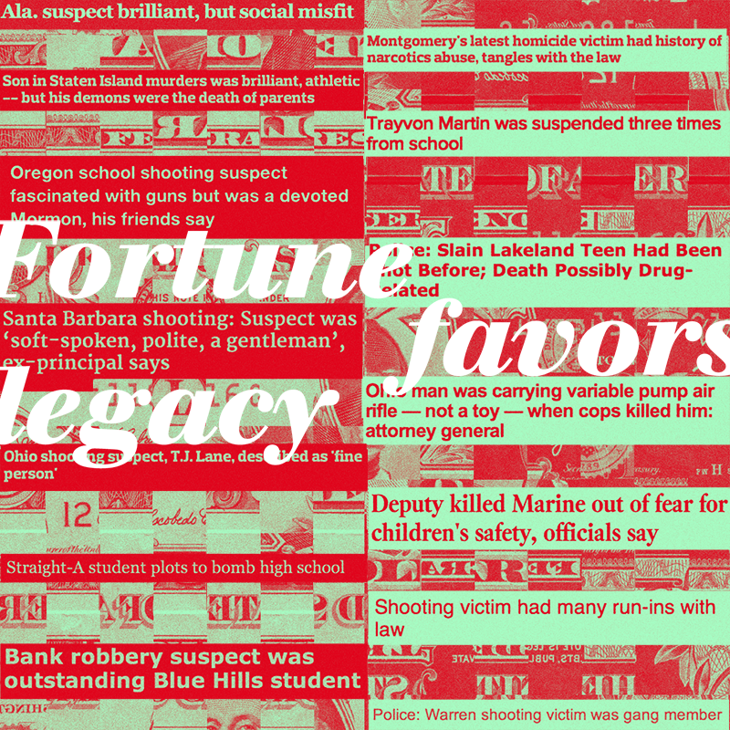

Vignettes about race and gender in America
Resting Bastard Face (RBF) is a folding narrative with no defined beginning or end, reflecting the endless nature of these issues. Statements were inspired by Jenny Holzer's Truisms.

 
Resting Bastard Face (RBF) is a folding narrative with no defined beginning or end, reflecting the endless nature of these issues. Statements were inspired by Jenny Holzer's Truisms.